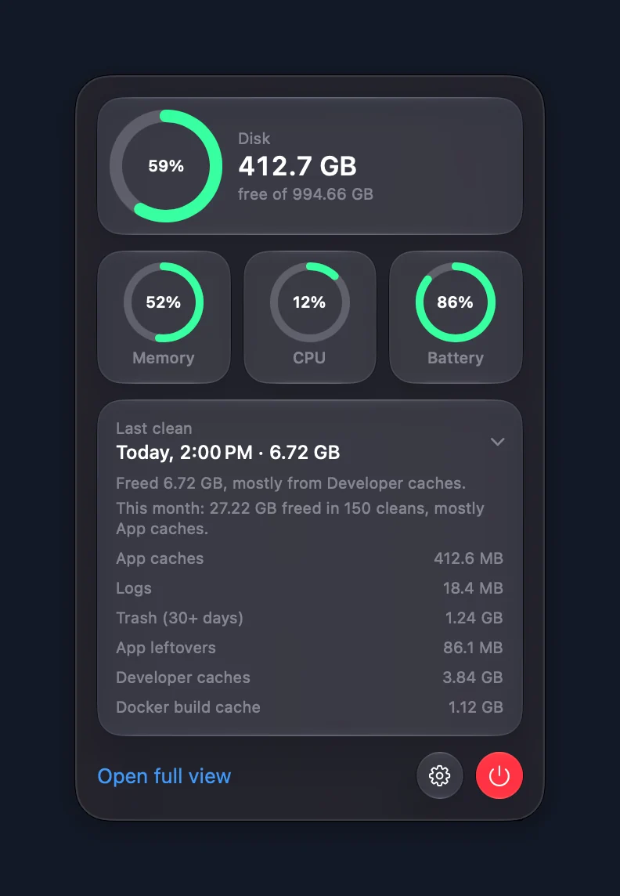
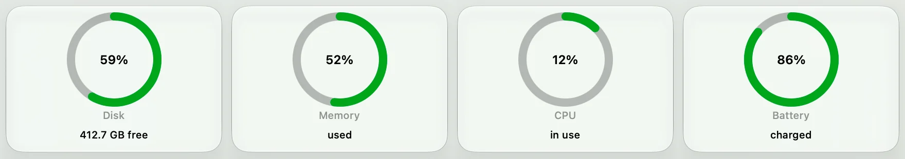
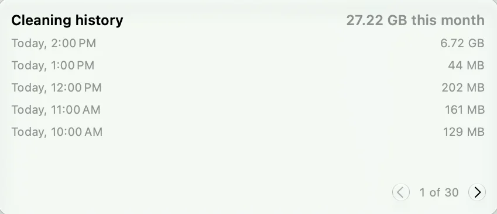
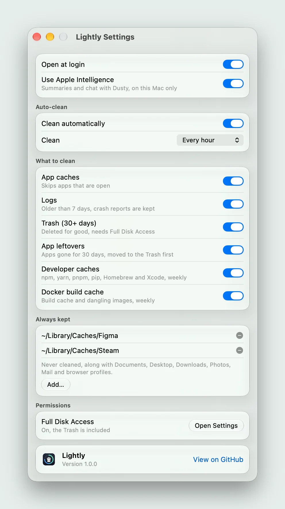
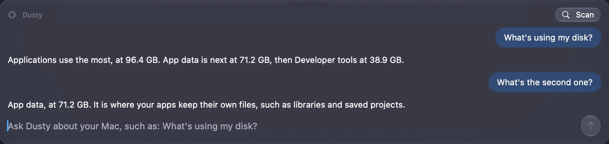

It cleans by itself
Every hour by default, day and night. Choose 3, 6 or 12 hours, or once a day, if you like it slower.
Catches up
If your Mac slept through a clean, it runs at the next wake.
Opens at login
Set it up once. It starts with your Mac from then on.
Pauses when told
Turn off Clean automatically and it stops until you resume.
Still has a button
Clean now sits in the full view for when you need space right away.

It shows its work
Click the ring in the menu bar for four live gauges and the last clean. Open the full view for bigger rings, the clean by category, this month’s total and a paged history of every run.
Disk, memory and CPU turn from green to orange at 60% and to red at 85%, so a glance is enough.

What you get in the window
The last clean
Date, total, and bytes freed for each of the six categories.

The whole history
Every clean by date and size, five to a page, kept for a year.

Settings fit one window
Open at login. Use Apple Intelligence. How often to clean. A switch for each category. An Always kept list. Full Disk Access status. That is all of them.
How Always kept works
Dusty, on your Mac
Dusty turns each clean into a plain sentence and answers questions about your disk. It runs on Apple Intelligence, so the conversation never leaves the machine.
Meet Dusty
Press once. Then never.
Free and open source, for macOS 27 on Apple Silicon.